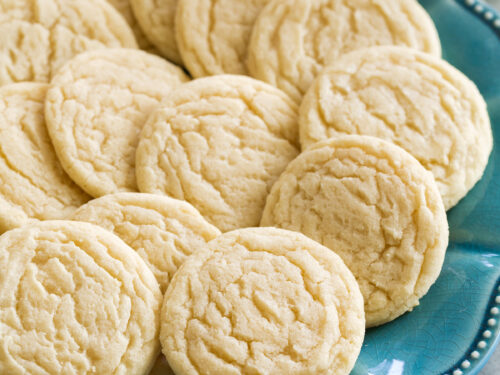

Sugar Cookies

Description
Satisfy your sweet tooth with this top-rated sugar cookie recipe. It comes together with just a few ingredients you likely already have on hand — and the sugar cookies turn out perfect every time.
Details
- Prep Time: 20 minutes
- Cook Time: 10 minutes
- Total Time: 30 minutes
- Servings: 48
Ingredients
- 2 3/4 cups all-purpose flour
- 1 teaspoon baking soda
- 1/2 teaspoon baking powder
- 1 cup softened butter
- 1 1/2 cups white sugar
- 1 egg
- 1 teaspoon vanilla extract
Method
- Preheat the oven to 375°F
- Stir flour, baking soda, and baking powder together in a small bowl.
- Beat sugar and butter together in a large bowl with an electric mixer until smooth. Beat in egg and vanilla. Gradually blend in flour mixture. Roll dough into walnut-sized balls and place 2 inches apart onto ungreased baking sheets.
- Bake in the preheated oven until edges are golden, 8 to 10 minutes. Cool on the baking sheets briefly before removing to a wire rack to cool completely.
All information sourced from allrecipes.com